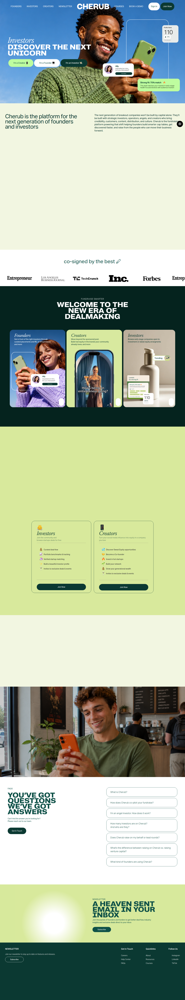
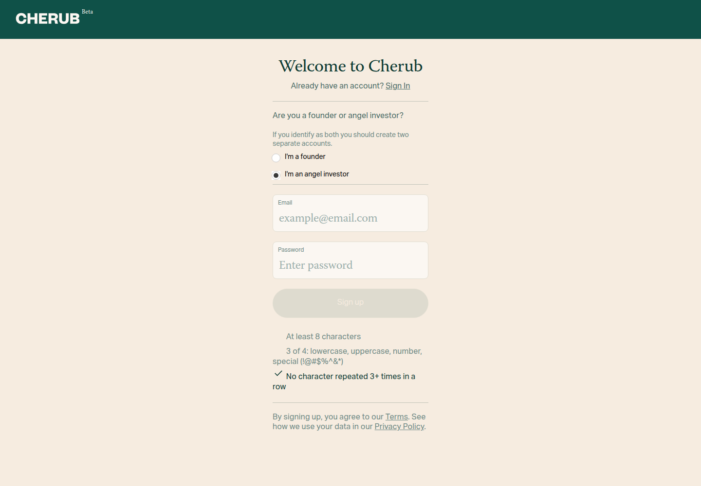
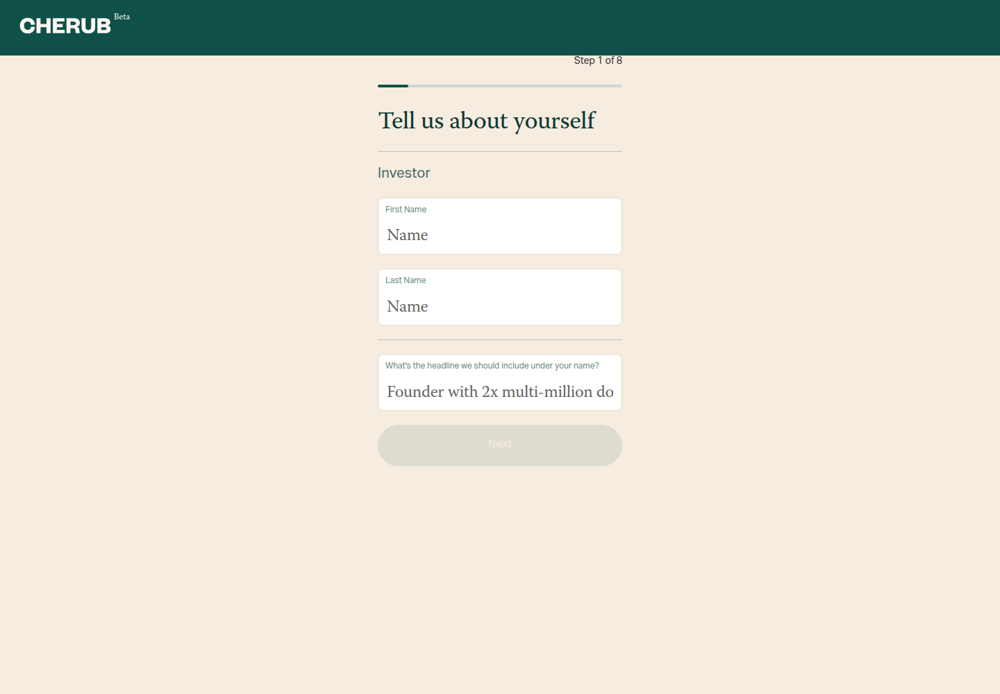

Profile
- Company
- Cherub
- Url
- https://www.investwithcherub.com/
- Source Category
- Direct competitors
- Research Status
- Deep Cited Research / Draft Complete
- Current Status
- live - re-verified 2026-07-19 by direct fetch of investwithcherub.com (HTTP 200, active product, live signup/login, active FAQ, current pricing shown as $270/quarter for founders). No signs of dead/parked/hijacked domain.
- Founded Launch Year
- 2023 (concept tested via newsletter in 2023; alpha launched summer 2023; public launch March 8, 2024 per TechCrunch)
- Company Age
- ~3 years (as of 2026)
- Hq Country
- US (Burbank, California per Crunchbase/PitchBook; entity is Cherub Technologies Inc.)
- Operating Area
- us
- Target Users
- Early-stage founders (Pre-Seed to Series A+, esp. Tech/Software, Consumer/CPG, Fashion/Beauty, Fintech, Healthcare); accredited angel investors ($5K-$250K checks); 'Creators' (influencers converting audience into equity/sweat-equity deals)
- Product Category
- founder-investor / capital matchmaking; creator-to-equity marketplace; data room / secure docs; AI deal/fit scoring; NOT a founder-to-founder cofounder matcher
Product Flows
- Swipe Card Interface
- yes - TechCrunch (Apr 2024) explicitly describes Cherub as dating-app-style matching ('Raya for deal flow'); current homepage (2026) uses 'browse' language rather than showing swipe UI directly, but the underlying mutual-interest/like mechanic is unchanged
- Mutual Match
- yes - dating-app mechanics where both founders and investors express interest before a connection opens; investors can filter/like, founders can accept
- Ai Matching Scoring
- yes - AI/proprietary matching plus investor-fit scoring
- Ai Deck Scoring
- not found / no public source - Cherub offers 'AI insights to see who's engaging with your materials and how' (engagement analytics), but no evidence of AI scoring the *content/quality* of a pitch deck itself
- Founder To Founder Flow
- Not a core path on Cherub. The closest analog is the 'Creator' track: creators can 'Become a Co-founder' or discover 'Sweat Equity' opportunities with founders, but this is a creator-monetization flow, not a peer cofounder-matching flow like BizMatch's Founder-to-Founder path. No dedicated founder-to-founder discovery/swipe mechanic found.
- Founder To Investor Flow
- yes - founders get discovered/request intros; investors browse deal profiles
- Project Profiles
- yes - startup/deal profiles
- Messaging Collaboration
- Platform facilitates 'investor intros' and enables founders/investors to connect and message once matched; described as enabling 'faster connections, more meaningful conversations' - exact in-app chat UI not documented in detail
- Mobile App
- not found / no public source - no dedicated iOS/Android app for investwithcherub.com was found (an unrelated app named 'cherub' on the App Store, id1301298728, belongs to a different developer, 'Cherub Technology Co. Ltd', not Cherub Technologies Inc.). Product appears web-app only.
- Web App
- yes
Security & Documents
- Nda Gated Unlock
- not found / no public source - data room access is restricted to 'verified investors' with granular permissioning and link-click tracking, which functions like access-gating, but no explicit NDA e-signature step was documented in available sources (contradicts original automated pass which marked 'yes')
- Data Room
- yes - secure multi-file sharing and viewed-doc analytics
- E Signature
- not found / no public source - no explicit e-signature/click-to-sign feature documented in homepage, about page, or press coverage (contradicts original automated pass which marked 'yes'; likely a keyword false-positive from 'secure' language)
- Meeting Prep Ai Briefing
- not found / no public source - no evidence of an AI-generated meeting-prep or briefing feature; AI use is limited to matching/fit-scoring and engagement analytics
Pricing, Funding & Traction
- Pricing Model
- Tiered membership/subscription for founders ($270/quarter current site; historically $480/yr standard and $950/yr 'Cherub Select' per TechCrunch Apr 2024); free for investors and creators
- Business Model
- Two/three-sided marketplace monetized via founder subscription fees (investors and creators use free); optional SPV facilitation for bundling investor capital
- Total Funding
- $1.25M-$2.02M (TechCrunch Apr 2024 reported $1.25M raised from angel investors; Crunchbase aggregates $2.02M across 2 rounds) - figures differ by source, both reported below
- Funding Rounds
- 2 rounds per Crunchbase: first round ~Sep 22, 2023; latest/seed round ~Mar 11, 2024 (reported by TechCrunch as $1.25M seed)
- Investors
- Angel investors including Drybar founder Alli Webb and Blavity founder Morgan DeBaun; cap table also includes First Round Angel Track and Pearl Influential Capital per company About page
- Funding Source Type
- Angel / pre-seed
- Last Funding Date
- ~March 2024 (per Crunchbase 'latest funding round Mar 11, 2024' and TechCrunch's April 2024 seed coverage)
- Users Traction
- Per current site (2026): $8.7M+ invested in startups facilitated, 4,000+ users, 1,000+ angel investors on platform. Per TechCrunch (Apr 2024, alpha-stage): 100 startups on platform generating $50K revenue; of 40 companies given full deck-view requests, 50% led to introductions and 20% of those were funded (~$1.1M collectively, 40% involving first-time angel investors). Since Sept 2023 the platform reportedly facilitated $3M+ in funding (as of Apr 2024).
- Deals Funding Facilitated
- $8.7M+ cumulative (2026 homepage claim); TechCrunch Apr 2024 cited ~$3M facilitated since Sept 2023, including a customer testimonial of $45K closed across two investments (Slick Chicks founder)
- Partnerships
- not found / no public source beyond investor/backer relationships listed above
- Media Coverage
- TechCrunch, 'Cherub, an angel investing community inspired by dating apps...' (Apr 17, 2024); Los Angeles Business Journal, 'Cherub Connects Startups with Funding'; Inc.com, 'This New Startup Wants to Help Founders Find Angel Investors'; Beauty Independent profile of founder Jaclyn Johnson; FinSMEs 'Cherub Raises $1M in Seed Funding'
- Product Update Activity
- Site copy and pricing changed between the Apr 2024 TechCrunch snapshot ($480/$950 annual tiers) and the current 2026 site ($270/quarter, expanded Creator vertical), indicating active ongoing product iteration; exact release cadence/changelog not publicly documented
- Acquisition Rebrand History
- not found / no public source - no evidence of acquisition or rebrand; company has operated as Cherub / Cherub Technologies Inc. since 2023
Scores
- Product Overlap Score
- 4
- Feature Maturity Score
- 4
- Market Traction Score
- 3
- Funding Strength Score
- 3
- Ai Depth Score
- 3
- Nda Security Strength Score
- 2
- Network Moat Score
- 3
- Direct Threat Score
- 3.1
- Source Confidence
- High
Evidence Notes
- Primary Sources
- https://www.investwithcherub.com/
https://www.investwithcherub.com/about-us
https://www.investwithcherub.com/app
https://app.investwithcherub.com/ - Secondary Sources
- https://techcrunch.com/2024/04/17/cherub-the-raya-of-angel-investing-is-reinventing-angel-rounds-with-a-950-subscription/
https://www.crunchbase.com/organization/cherub-ab28
https://pitchbook.com/profiles/company/551736-82
https://labusinessjournal.com/featured/cherub-connects-startups-with-funding/
https://www.inc.com/rebecca-deczynski/this-new-startup-wants-to-help-founders-find-angel-investors.html
https://www.beautyindependent.com/create-cultivate-founder-jaclyn-johnson-connects-brands-angel-investors-cherub/
https://www.finsmes.com/2024/03/cherub-raises-1m-in-seed-funding.html - Unsupported Claims
- Total funding figure varies by source ($1.25M vs $2.02M) - both reported, not reconciled. No independent confirmation of the $8.7M 'invested in startups' homepage stat beyond the company's own claim.
- Contradictions
- Original automated pass marked nda_gated_unlock and e_signature as 'yes' - real research found no explicit evidence of either an NDA-gate step or e-signature feature; downgraded both to 'not found'. Also note Cherub is NOT a founder-to-founder cofounder matcher despite the input's product_category text implying cofounder matching overlap - it's founder<->investor and creator<->founder/equity.
- Last Checked
- 2026-07-19
- Notes
- Highest-maturity, best-funded, most press-covered company in this batch, but its core interaction is Founder<->Investor (Cherub's version of BizMatch's second 'Path'), not Founder<->Founder. Overlap with BizMatch's NDA-gated founder collaboration path is weak - Cherub's 'gating' is investor-verification + data-room permissions, not a documented NDA/e-sign flow.
Registration Flow
Research date: 2026-07-19. Screenshots are sanitized public copies from the private registration-flow capture set; credentials, tokens, verification links/codes, browser chrome, and private identifiers are not intentionally published.
Outcome: account created; email not verified.
Stop point: Authenticated investor onboarding — Step 1 of 8: Tell us about yourself
Blocker / boundary: Required personal/public profile details were not provided for the evidence-only capture, so the authenticated eight-step onboarding was not submitted beyond Step 1.
- Public homepage. Cherub's official homepage presents separate paths for founders, investors, and creators. The investor path is described as free to join.
- Account registration form. Join Now opens Cherub's Auth0-hosted registration form with founder/angel-investor role selection, email, password, and password rules.
- Angel investor path selected. The free angel-investor role was selected before account submission. No payment, KYC, or investment action was requested at this stage.
- Authenticated onboarding begins. Successful registration redirected into Cherub's authenticated investor onboarding at Step 1 of 8, requesting first name, last name, and a public-profile headline.


